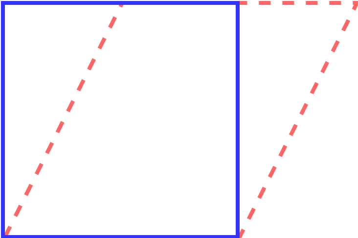
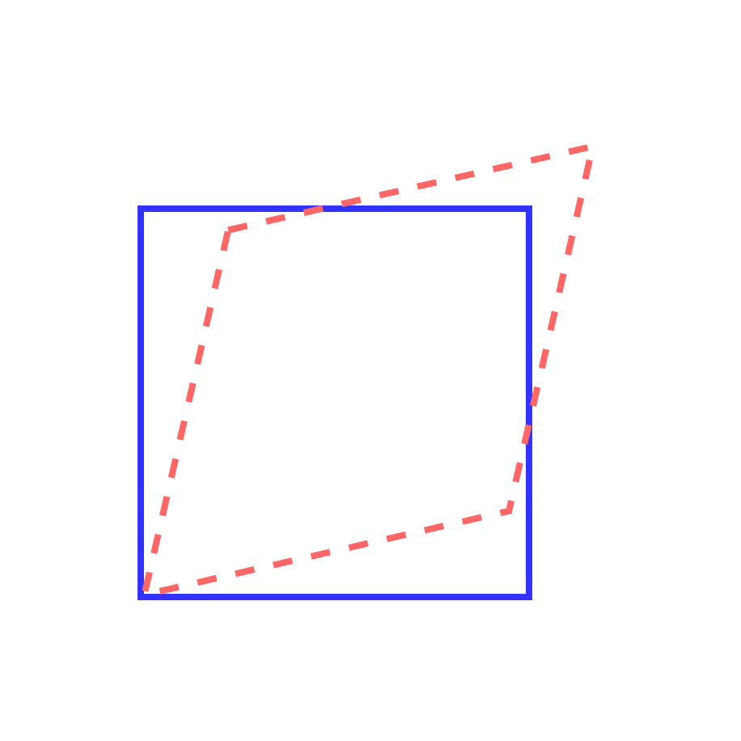

应变与位移
物体的变形源于其内部各质点之间的相对位移
当外力或环境条件发生变化时，物体内部的质点会产生不同程度的移动，这种相对位移导致了物体的几何形状和尺寸发生变化。通过对质点间相对位移的分析，可以定量描述材料的应变状态，并进一步研究其力学性能和变形规律
位移函数 \(\mathbf{u}:\Omega_{0}\rightarrow \mathbb{R}^{3}\) 可以表示为
\[
\mathbf{u}(\mathbf{X}) = \mathbf{x} - \mathbf{X},
\]
其中，\(\mathbf{X}=[X_{1},X_{2},X_{3}]^{T}\) 为物体内部任意一点的初始位置，\(\mathbf{x}=[x_{1},x_{2},x_{3}]^{T}\) 为该点在受力作用下移动到的新位置
刚体运动
在刚体运动中，物体内部任意两点之间的距离始终保持不变，因此物体只发生整体的平移或旋转，而不会产生形变
平移
若
\[
\mathbf{x} = \mathbf{X} + \mathbf{c},
\]
其中，\(\mathbf{c} = [c_{1},c_{2},c_{3}]^{T}\)，此时物体发生平移
\[
\mathbf{u}(\mathbf{X}) = \mathbf{c}.
\]
旋转
若
\[
\mathbf{x} = Q\mathbf{X},
\]
其中，\(Q\in\mathbb{M}^{3}\) 是正交矩阵，则物体发生旋转，此时
\[
\mathbf{u}(\mathbf{X}) = (Q-I)\mathbf{X}.
\]
均匀拉伸和压缩
在均匀拉伸或压缩运动中，物体在外力作用下沿某一方向均匀地变长或变短，表现为物体内部各质点的位置坐标按比例发生变化
\[\begin{split}
\begin{bmatrix}x_{1}\\x_{2}\\x_{3}\end{bmatrix} = \begin{bmatrix}k_{1}X_{1}\\k_{2}X_{2}\\k_{3}X_{3}\end{bmatrix} =\begin{bmatrix}k_{1}&&\\&k_{2}&\\&&k_{3}\end{bmatrix}\begin{bmatrix}X_{1}\\X_{2}\\X_{3}\end{bmatrix},
\end{split}\]
其中，\(k_{i}>0\)，当 \(k_{i}>1\) 时，为拉伸变形；当 \(k_{i}<1\) 时，为压缩变形。此时
\[
\mathbf{u}(\mathbf{X}) = (I - \text{diag}(k_{1},k_{2},k_{3}))\mathbf{X}.
\]
剪切变形
在剪切变形中，物体内部的某一层相对于另一层发生平行移动，导致物体的形状发生改变，但体积基本保持不变
简单剪切
简单剪切是材料层间沿固定方向发生相对滑动，而垂直于这些平面的方向保持长度不变的变形模式，例如

Fig. 18 二维简单剪切示意图
三维情形下，对于平行 \(xOy\) 面，剪切角为 \(\theta_{xy}\) 的剪切移动为例
\[\begin{split}
\begin{bmatrix}x_{1}\\x_{2}\\x_{3}\end{bmatrix} = \begin{bmatrix}X_{1} + \tan\theta_{xy}\cdot X_{2}\\X_{2}\\X_{3}\end{bmatrix} =\begin{bmatrix}1&\tan\theta_{xy}&0\\0&1&0\\0&0&1\end{bmatrix}\begin{bmatrix}X_{1}\\X_{2}\\X_{3}\end{bmatrix},
\end{split}\]
注意到，变换矩阵的行列式等于 \(1\)，因此简单剪切变形并不会导致物体体积发生变化，此时
\[\begin{split}
\mathbf{u}(\mathbf{X}) = \begin{bmatrix}0&\tan\theta_{xy}&0\\0&0&0\\0&0&0\end{bmatrix}\mathbf{X}.
\end{split}\]
可以考虑多个简单剪切的叠加
\[\begin{split}
\begin{equation}
\begin{aligned}
&\begin{bmatrix}1&0&0\\0&1&\tan\theta_{yz}\\0&0&1\end{bmatrix}
\begin{bmatrix}1&0&\tan\theta_{xz}\\0&1&0\\0&0&1\end{bmatrix}
\begin{bmatrix}1&\tan\theta_{xy}&0\\0&1&0\\0&0&1\end{bmatrix}\\
=&\begin{bmatrix}1&\tan\theta_{xy}&\tan\theta_{xz}\\0&1&\tan\theta_{yz}\\0&0&1\end{bmatrix}
\end{aligned}
\end{equation}
\end{split}\]
在简单剪切变形过程中，物体的对称面会持续发生旋转
对称剪切
对称剪切变形是指物体在无旋转的条件下，沿两个互相垂直方向发生等大反向的剪切位移，使直角变为斜角，例如

Fig. 19 二维对称剪切示意图
三维情形下，假设在 \(xOy\) 平面内，沿 \(x\) 方向和 \(y\) 方向分别发生等量、反向的剪切，剪切角为 \(\theta_{xy}\)，其变换为
\[\begin{split}
\begin{bmatrix}x_{1}\\x_{2}\\x_{3}\end{bmatrix} = \begin{bmatrix}X_{1} + \tan(\theta_{xy}/2)\cdot X_{2}\\\tan(\theta_{xy}/2)\cdot X_{1} + X_{2}\\X_{3}\end{bmatrix} =\begin{bmatrix}1&\tan(\theta_{xy}/2)&0\\\tan(\theta_{xy}/2)&1&0\\0&0&1\end{bmatrix}\begin{bmatrix}X_{1}\\X_{2}\\X_{3}\end{bmatrix},
\end{split}\]
此时
\[\begin{split}
\mathbf{u}(\mathbf{X}) = \begin{bmatrix}0&\tan(\theta_{xy}/2)&0\\\tan(\theta_{xy}/2)&0&0\\0&0&0\end{bmatrix}\mathbf{X}.
\end{split}\]
当 \(\theta_{xy}\) 很小时（小变形假定），可近似认为体积不变
对于更一般的情形，变换矩阵为
\[\begin{split}
\begin{bmatrix}
1 & \tan(\theta_{xy}/2) & \tan(\theta_{xz}/2) \\
\tan(\theta_{xy}/2) & 1 & \tan(\theta_{yz}/2) \\
\tan(\theta_{xz}/2) & \tan(\theta_{yz}/2) & 1
\end{bmatrix}
\end{split}\]
变形梯度
通过考虑材料内部任何一条曲线在受力后的形变来分析材料的形变特征，假设初始曲线为
\[
\mathbf{X}(\xi) = [X_{1}(\xi),X_{2}(\xi),X_{3}(\xi)]^{T}
\]
受力后变为
\[
\mathbf{x}(\xi) = [x_{1}(\xi),x_{2}(\xi),x_{3}(\xi)]^{T}
\]
因此，曲线上任意一点的切向量（无穷小后的逼近线段）变化满足
\[\begin{split}
\frac{\partial \mathbf{x}}{\partial \xi} = \frac{\partial \mathbf{x}}{\partial \mathbf{X}}\frac{\partial \mathbf{X}}{\partial \xi} = \begin{bmatrix}
\frac{\partial x_1}{\partial X_1} & \frac{\partial x_1}{\partial X_2} & \frac{\partial x_1}{\partial X_3} \\
\frac{\partial x_2}{\partial X_1} & \frac{\partial x_2}{\partial X_2} & \frac{\partial x_2}{\partial X_3} \\
\frac{\partial x_3}{\partial X_1} & \frac{\partial x_3}{\partial X_2} & \frac{\partial x_3}{\partial X_3}
\end{bmatrix}\frac{\partial \mathbf{X}}{\partial \xi},
\end{split}\]
定义变形梯度矩阵为
\[\begin{split}
F = \frac{\partial \mathbf{x}}{\partial{\mathbf{X}}} =
\begin{bmatrix}
\frac{\partial x_1}{\partial X_1} & \frac{\partial x_1}{\partial X_2} & \frac{\partial x_1}{\partial X_3} \\
\frac{\partial x_2}{\partial X_1} & \frac{\partial x_2}{\partial X_2} & \frac{\partial x_2}{\partial X_3} \\
\frac{\partial x_3}{\partial X_1} & \frac{\partial x_3}{\partial X_2} & \frac{\partial x_3}{\partial X_3}
\end{bmatrix},
\end{split}\]
\(F\) 包含了由于变形所产生的长度、角度和体积变化的所有必要的局部信息。例如，\(\det(F^{T}) = \det(F)\) 反映了局部体积变化
此时
\[\begin{split}
\nabla\mathbf{u} =
\begin{bmatrix}
\frac{\partial u_1}{\partial X_1} & \frac{\partial u_1}{\partial X_2} & \frac{\partial u_1}{\partial X_3} \\
\frac{\partial u_2}{\partial X_1} & \frac{\partial u_2}{\partial X_2} & \frac{\partial u_2}{\partial X_3} \\
\frac{\partial u_3}{\partial X_1} & \frac{\partial u_3}{\partial X_2} & \frac{\partial u_3}{\partial X_3}
\end{bmatrix}=
\frac{\partial \mathbf{u}}{\partial \mathbf{X}} = \frac{\partial \mathbf{x}}{\partial \mathbf{X}} - \frac{\partial \mathbf{X}}{\partial \mathbf{X}} = F - I.
\end{split}\]
于是
\[
\mathrm{d}\mathbf{u} = (F-I)\mathrm{d}\mathbf{X},
\]
得到
\[
\mathrm{d}\mathbf{x} = \mathrm{d}\mathbf{X} + \mathrm{d}\mathbf{u} = \mathrm{d}\mathbf{X} + \nabla\mathbf{u}\ \mathrm{d}\mathbf{X},
\]
{kind=link}
{kind=link}